format_list_bulleted
สารบัญ
กำแพงเพชร
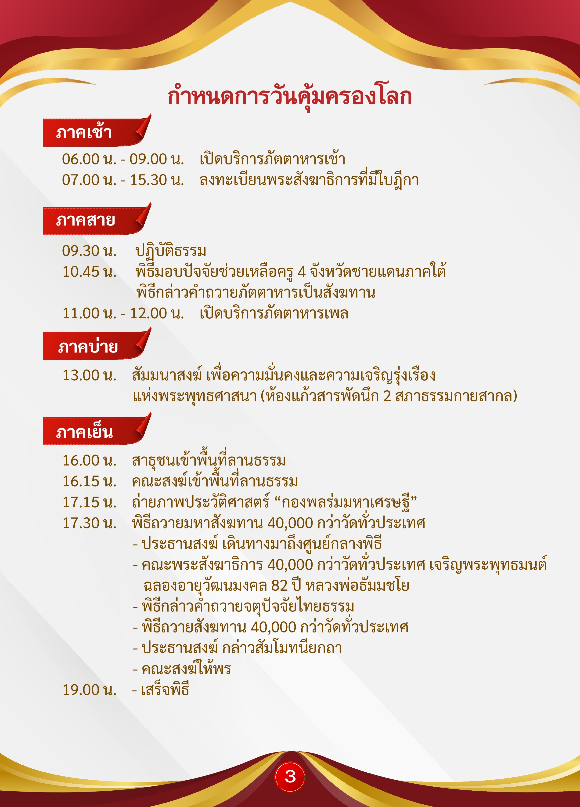
หน้า 3
กำหนดการ
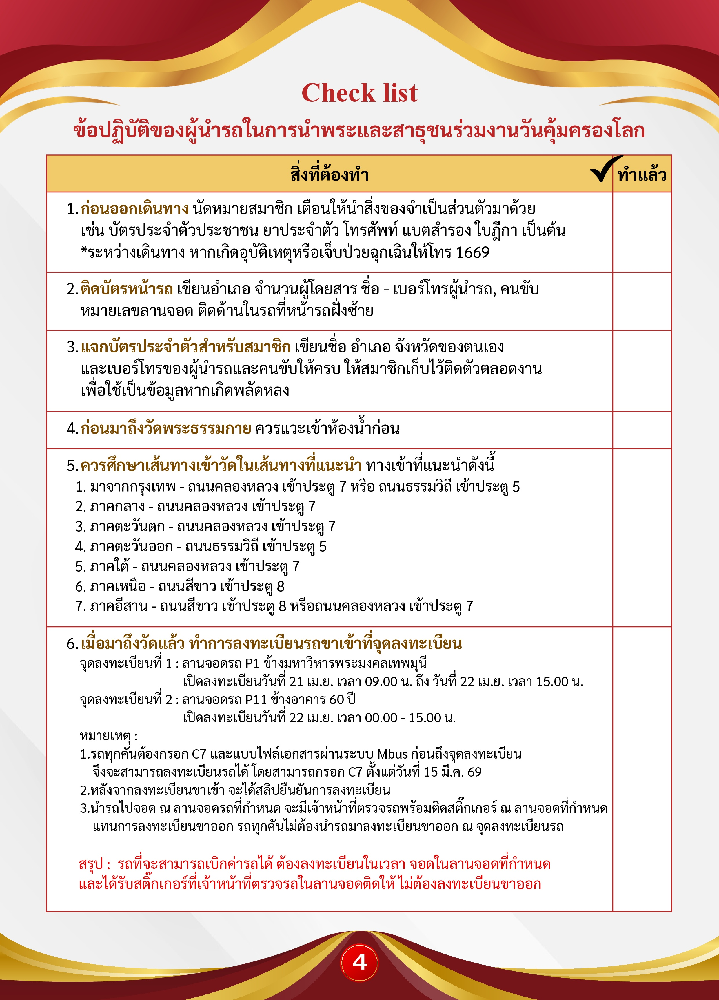
หน้า 4
ข้อปฏิบัติของผู้นำรถในการนำพระและสาธุชนร่วมงานวันคุ้มครองโลก
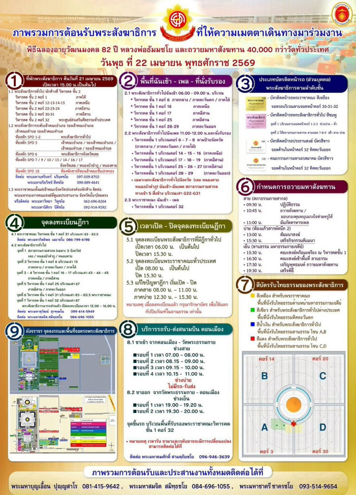
หน้า 7
ภาพรวมการต้อนรับพระสังฆาธิการ

หน้า 8
ข้อมูลจราจรที่ควรทราบเบื้องต้น
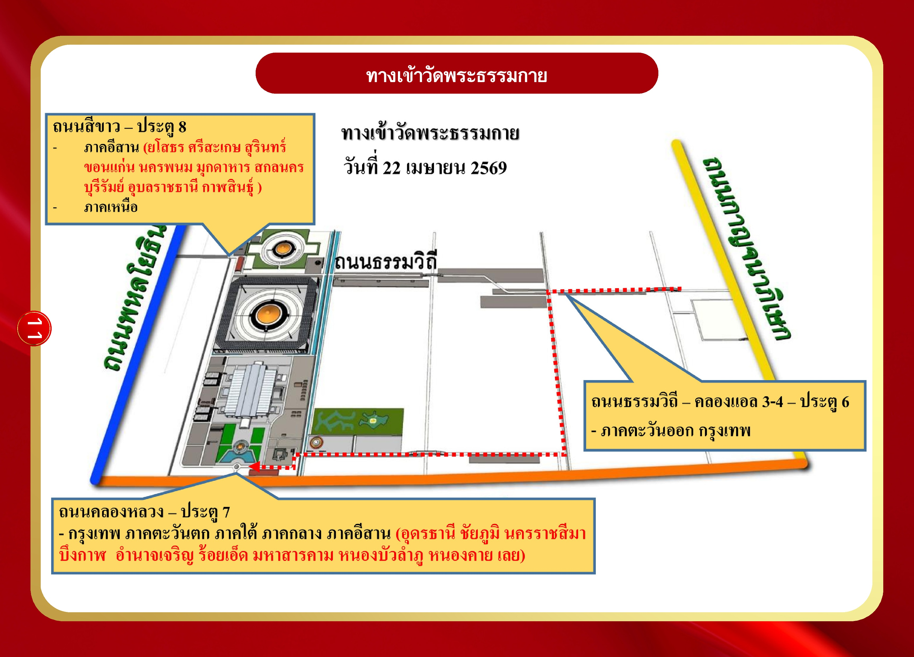
หน้า 11
ทางเข้าวัดพระธรรมกาย
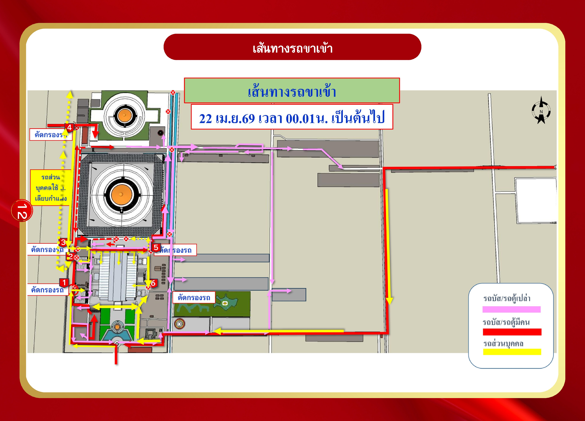
หน้า 12
เส้นทางรถขาเข้า
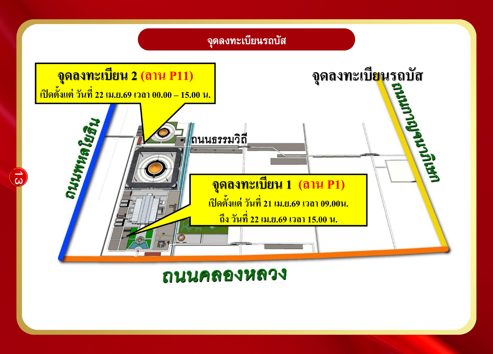
หน้า 13
จุดลงทะเบียนรถบัส
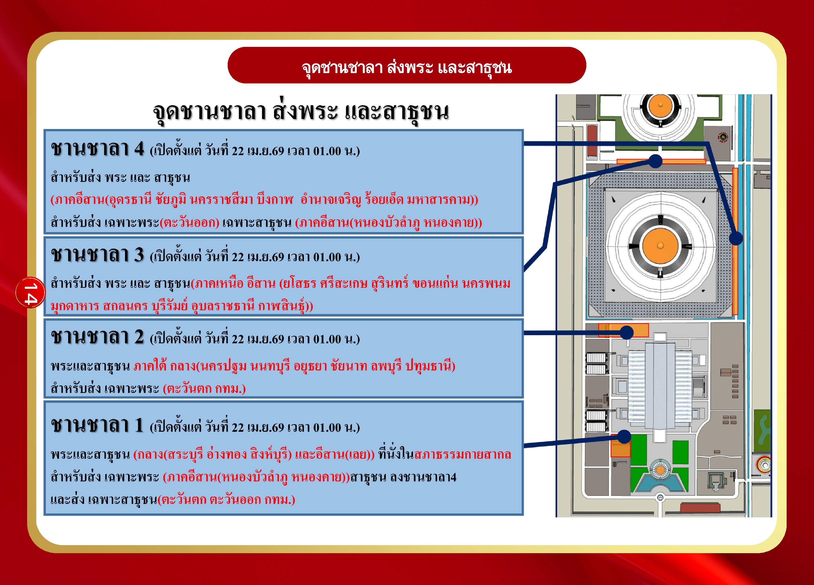
หน้า 14
จุดชานชาลาส่งพระและสาธุชน (ผังชานชาลา 1 2 3 4)

หน้า 20-21
การเข้าพื้นที่นั่งสาธุชน ภาคเหนือ (เชียงราย เชียงใหม่ นครสวรรค์ แพร่ น่าน พะเยา แม่ฮ่องสอน ลำปาง ลำพูน พิจิตร เพชรบูรณ์ อุตรดิตถ์ อุทัยธานี)

หน้า 22-23
การเข้าพื้นที่นั่งสาธุชน ภาคเหนือ (กำแพงเพชร ตาก พิษณุโลก สุโขทัย)

หน้า 24
การเข้าพื้นที่นั่งสาธุชน ภาคอีสาน (นครราชสีมา อุดรธานี ชัยภูมิ บึงกาฬ หนองบัวลำภู อำนาจเจริญ หนองคาย ร้อยเอ็ด มหาสารคาม)

หน้า 25-27
การเข้าพื้นที่นั่งสาธุชน ภาคอีสาน (ยโสธร ศรีสะเกษ สุรินทร์ ขอนแก่น นครพนม มุกดาหาร สกลนคร บุรีรัมย์ อุบลราชธานี กาฬสินธุ์)

หน้า 28
การเข้าพื้นที่นั่งสาธุชน ภาคกลาง (นครปฐม นนทบุรี อยุธยา ชัยนาท ลพบุรี ปทุมธานี และชาวต่างประเทศ)

หน้า 29
การเข้าพื้นที่นั่งสาธุชน ภาคใต้ ภาคตะวันตก ภาคตะวันออก และจังหวัดสระบุรี สิงห์บุรี อ่างทอง กทม. สมุทรปราการ เลย และต่างประเทศ

หน้า 30
การเข้าพื้นที่ของพระและสาธุชนที่มารถส่วนบุคคล
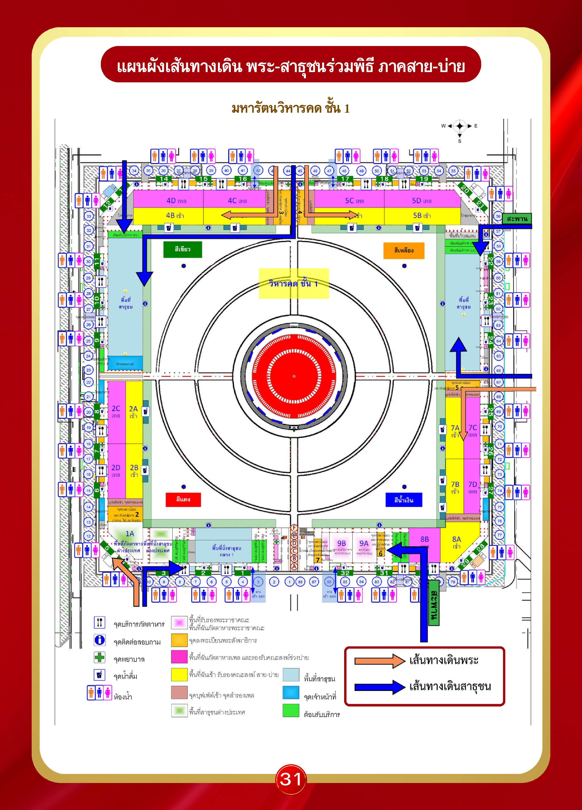
หน้า 31
แผนผัง มหารัตนวิหารคด ชั้น 1 — เส้นทางเดิน พระ-สาธุชน ภาคสาย-บ่าย
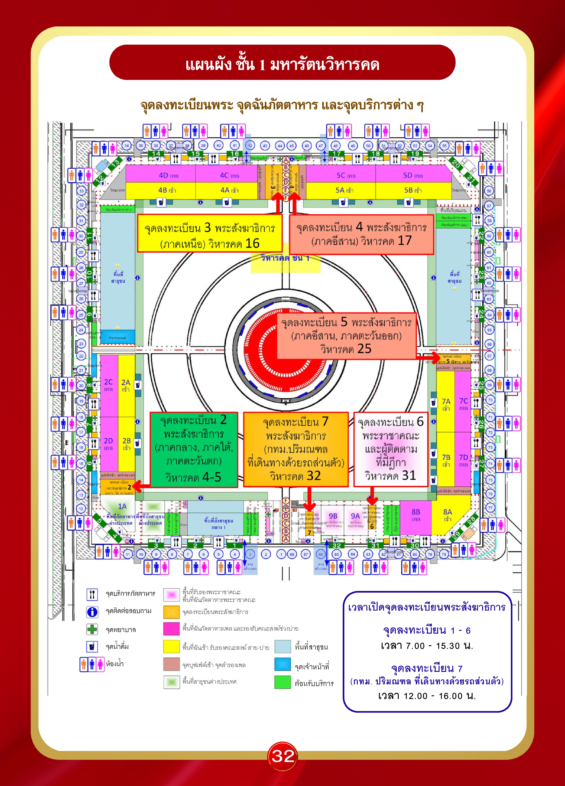
หน้า 32
แผนผัง มหารัตนวิหารคด ชั้น 1 — จุดลงทะเบียนพระ จุดฉันภัตตาหาร และจุดบริการต่างๆ

หน้า 33
แผนผัง มหารัตนวิหารคด ชั้น 1 — พื้นที่นั่งพระ-สาธุชน และจุดบริการต่างๆ
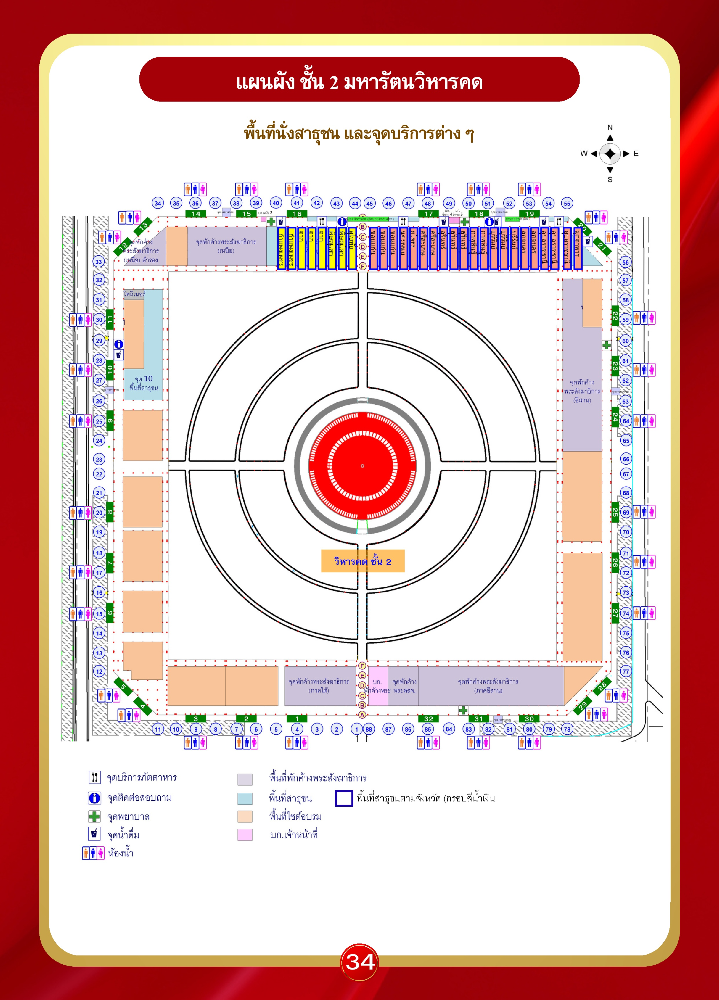
หน้า 34
แผนผัง มหารัตนวิหารคด ชั้น 2 — พื้นที่นั่งสาธุชน และจุดบริการต่างๆ

หน้า 35
แผนผัง สภาธรรมกายสากล ชั้น 1 — ลานจอดรถพระสังฆาธิการ รถส่วนบุคคล
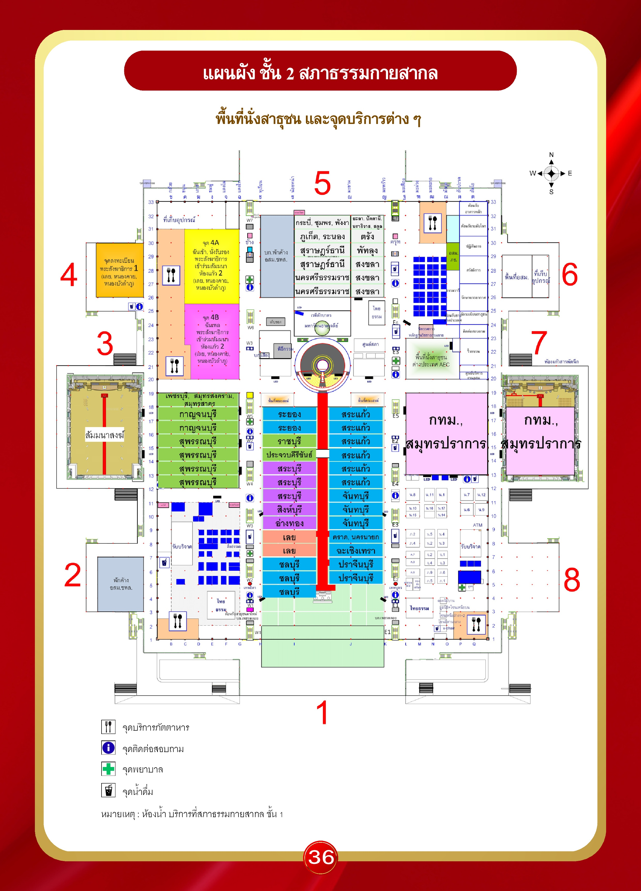
หน้า 36
แผนผัง สภาธรรมกายสากล ชั้น 2 — พื้นที่นั่งสาธุชน และจุดบริการต่างๆ
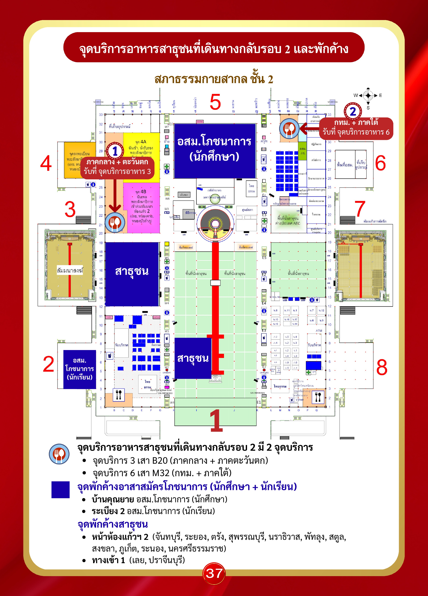
หน้า 37
จุดบริการอาหารสาธุชนที่เดินทางกลับรอบ 2 และจุดพักค้าง — สภาธรรมกายสากล ชั้น 2
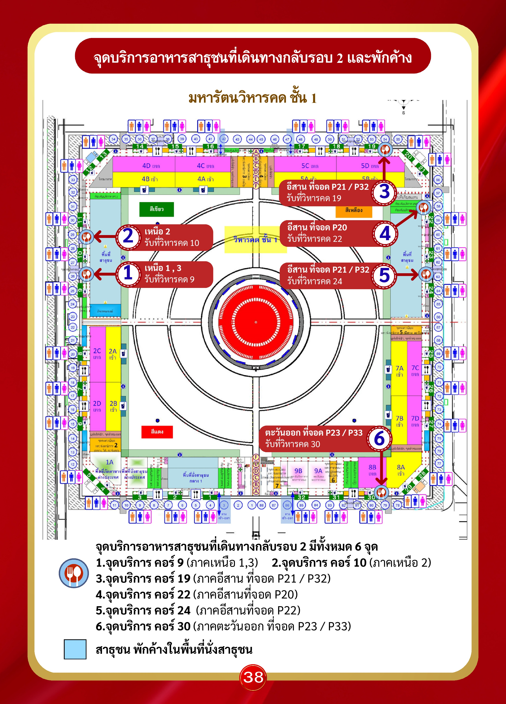
หน้า 38
จุดบริการอาหารสาธุชนที่เดินทางกลับรอบ 2 และจุดพักค้าง — มหารัตนวิหารคด ชั้น 1
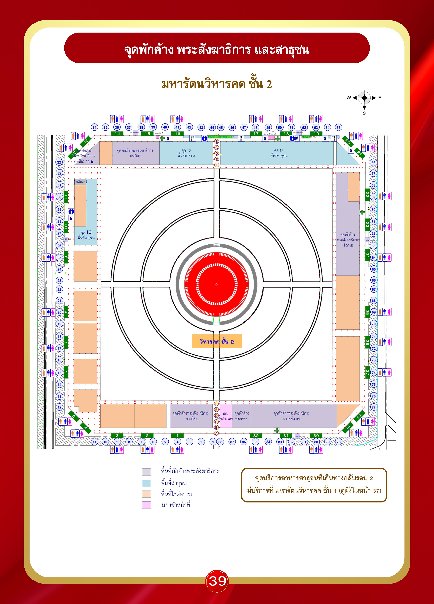
หน้า 39
จุดบริการอาหารสาธุชนที่เดินทางกลับรอบ 2 และจุดพักค้าง — มหารัตนวิหารคด ชั้น 2 (พระสังฆาธิการ)
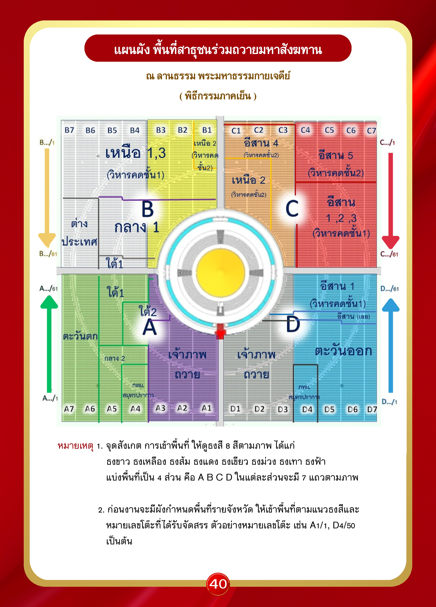
หน้า 40
ผังพื้นที่สาธุชนร่วมถวายมหาสังฆทาน ลานธรรม(พิธีกรรมภาคเย็น)

หน้า 41
ผังลานจอดรถวันคุ้มครองโลก (ภาพรวม)

หน้า 42
ผังอาคารจอดรถ 1 2 3 4 (รถตู้)

หน้า 43
ผังลานจอด P2, P3 (กทม. ภาคกลาง ต่างประเทศ)
หน้า 43
ผังลานจอด P5 (ภาคใต้ ภาคตะวันตก)

หน้า 44-45
ผังลานจอด P11, P11/1, P11/2, P13, P31, P32 (ภาคเหนือ)

หน้า 46-47
ผังลานจอด P20, P21, P32 (ภาคอีสาน)

หน้า 48
ผังลานจอด P23, P33 (ภาคตะวันออก)
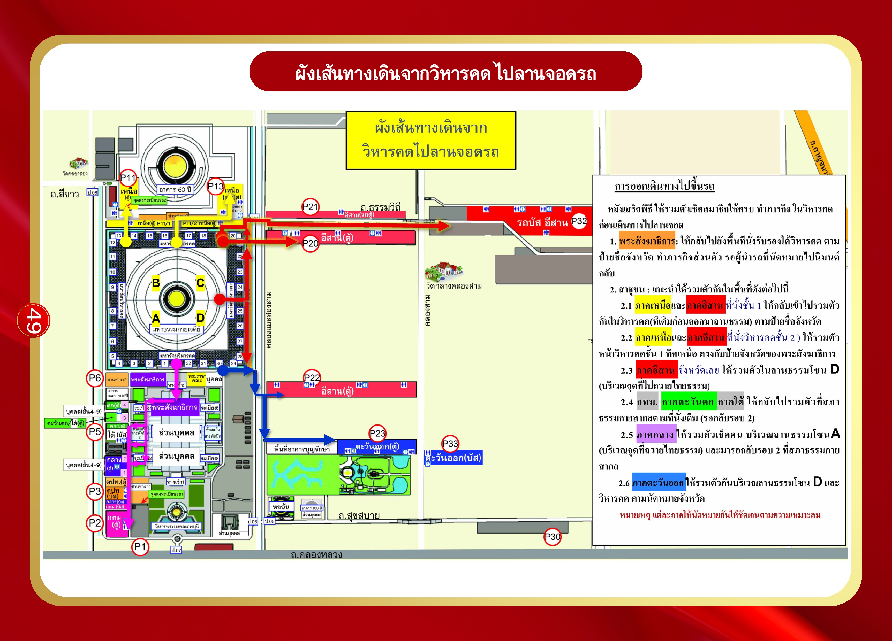
หน้า 49
ผังทางเดินจากวิหารคดไปลานจอด
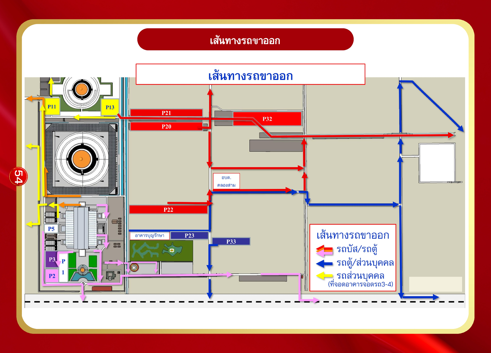
หน้า 54
เส้นทางรถขาออก
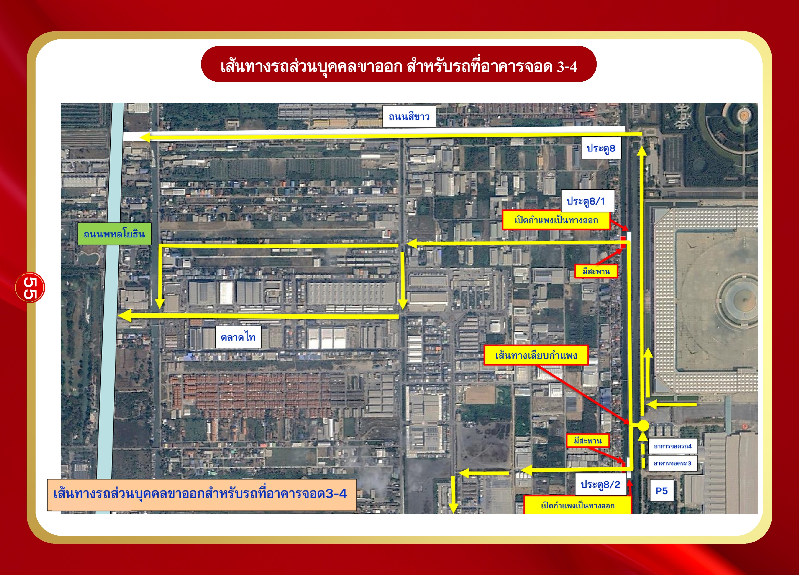
หน้า 55
เส้นทางรถส่วนบุคคลขาออก (อาคารจอด 3-4)
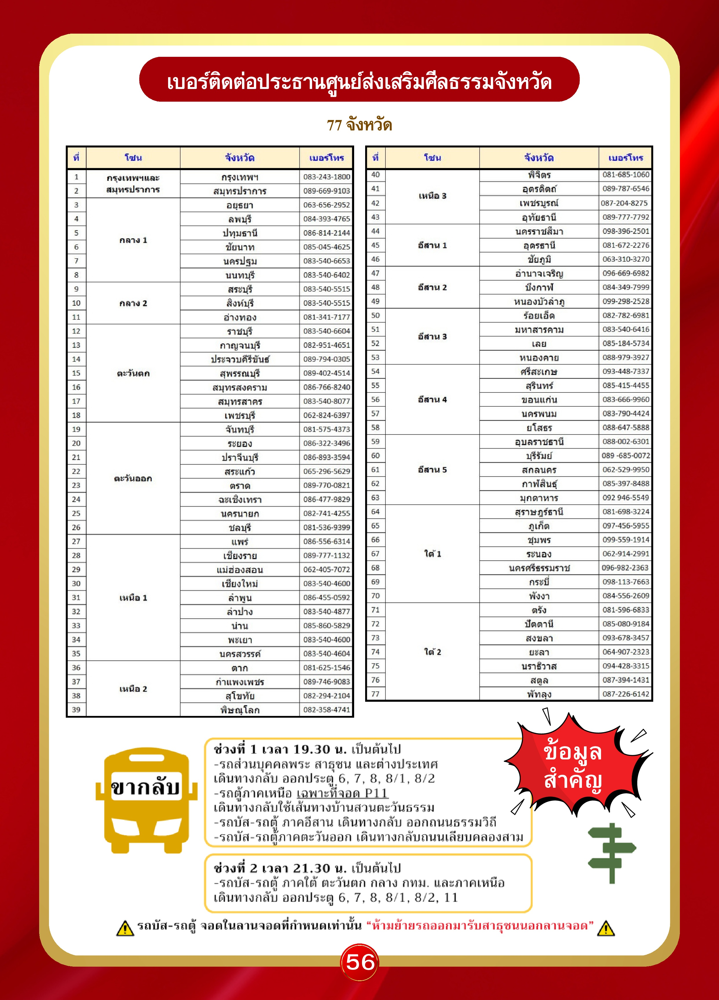
หน้า 56
เบอร์ติดต่อประธานศูนย์ฯ